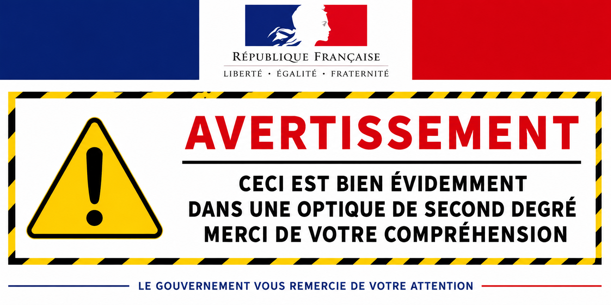

À propos de moi
Premierement je ne m'appelle pas Google Trad
j'adore le foot
j'adore le Bayern Munich
j'adore Michael Olise
et l'equipe de France evidemment
et sinon ... Bah cv en vrai
En savoir plus sur moi :
Mes projets :
- mon objectif dans la vie, c'est que vous lisiez cette page
- Ne pas être Google Traduction
